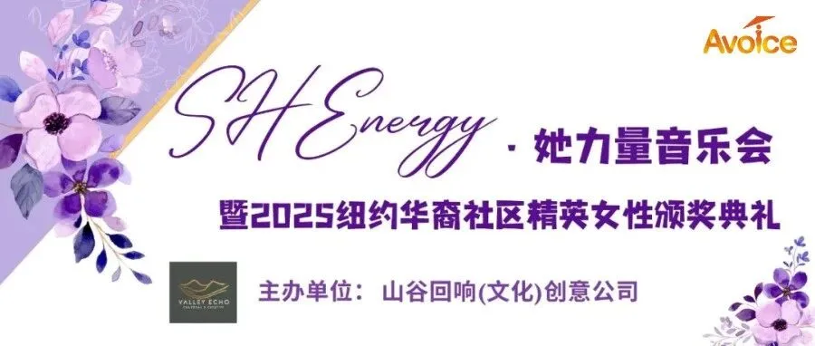
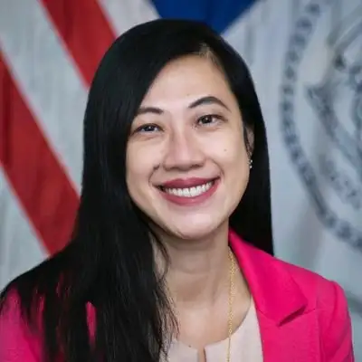
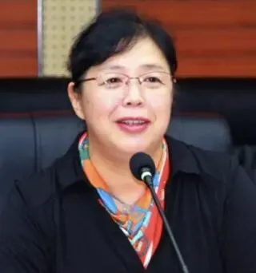
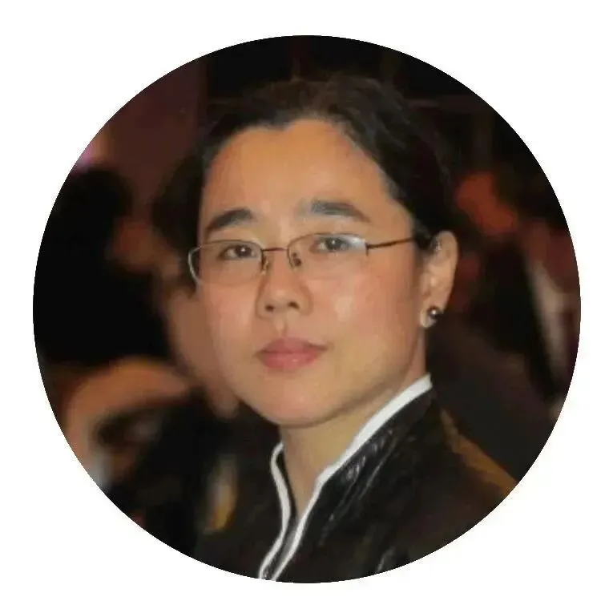
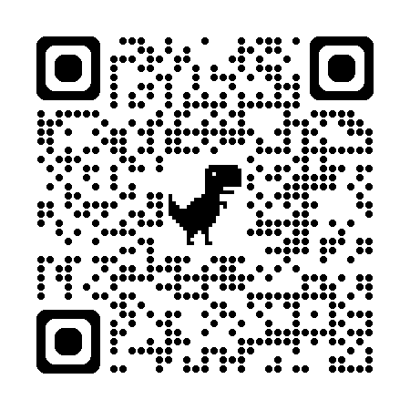
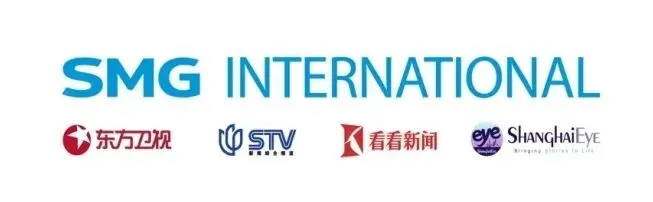
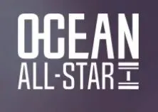
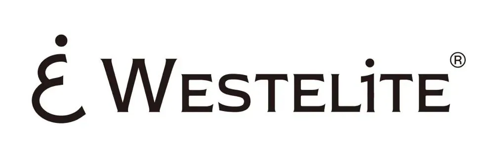
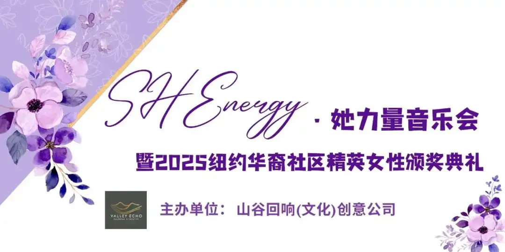

活动简介
“SHEnergy·她力量”音乐会暨纽约华裔社区女性精英颁奖典礼，旨在表彰在纽约华裔社区中极具影响力和魅力的女性，展现她们的成就与风采，通过音乐会的形式颂扬女性的独立、坚强和毅力，同时传递女性的温柔、善良和奉献的精神。
本次活动将汇聚社区领袖、企业家、艺术家及各界精英，共同见证这一华人社区的盛事。
活动时间：
2025年3月8日
7:00PM - 9:30PM（音乐会及颁奖）
9:30PM - 10:30PM （VIP私享酒会）
活动地点：
Four Points by Sheraton Flushing 2nd Floor (福朋喜来登酒店2楼)
33-68 Farrington St, Flushing, New York, 11354
观众人数：350+
着装要求：正装出席，一起见证荣耀时刻。
活动亮点：
超高质量音乐演出
独特女性奖项设置
重量嘉宾参与颁奖
邀请制VIP私享酒会
颁奖嘉宾
孟昭文
美国国会议员

黄敏仪
纽约市议员
李昌永
纽约民事法庭法官
18年资深纽约执业律师

朱宇华
教育学博士
纽约电影学院副院长

卢 宁
卢宁建筑师事务所所长
纽约浙江大学校友会
荣誉会长
朱自强
医学博士
美国华人医师协会会长
王崇章
纽约温州同乡会会长
奖项设置
为彰显华裔女性的独特魅力与风采，“SHEnergy·她力量”组委会特设六项奖项，并邀请重量级颁奖嘉宾，为杰出华裔女性颁奖：
魅力女性奖
社区奉献奖
文化传承奖
创新创业奖
最具影响力奖
最佳成就奖
购票信息
请复制链接至浏览器购票：
https://www.eventbrite.com/e/1255107011859?aff=oddtdtcreator
或扫描二维码购票：

如有任何疑问，或想加入活动群，请添加微信咨询：
主办方介绍

山谷回响文化创意公司
山谷回响(文化)创意公司致力于促进中美文化与艺术交流，搭建跨文化沟通的桥梁。公司专注于组织高质量的经济活动、文化艺术活动、展览、音乐会及各种论坛，推动中美企业、艺术家、和各类机构之间的深度合作。公司业务涵盖中国企业出海市场推广、文化活动策划、艺术展演推广、跨国艺术家经纪及国际交流项目咨询。凭借丰富的资源和专业团队，助力中美两国在艺术、人文和商业领域的紧密互动，深耕文化交流，促进多元艺术融合，为中美文化合作搭建更广阔的平台。
音乐会介绍
“SHEnergy·她力量”音乐会由国际亚洲文化公会(International Asian Cultural Soceity)协助举办，IACS长期深耕高端艺术领域，并与众多优秀的本地华人青年艺术家建立了稳固的合作关系。这些艺术家不仅具备专业的艺术教育背景和丰富的舞台演出经验，更以其才华与创造力诠释女性的力量与魅力。他们的精彩演出将为本次盛典增添艺术光彩，生动展现“SHEnergy·她力量”所倡导的独立、自信与坚韧精神，为观众呈现一场极具艺术感染力的视听盛宴。
音乐家们也将通过西洋乐器、民族乐器，歌剧和流行音乐共等不同的音乐风格，为纽约的华人女性献上赞歌。
艺术家介绍
殷源，大提琴家，就读于纽约曼尼斯音乐学院，曾荣获新加坡国际音乐节金奖、安塞尔莫国际比赛一等奖、意大利AVNI比赛一等奖等国际大奖。
娄婉茹 ，小提琴家和中提琴家，就读于纽约曼尼斯音乐学院，有着深厚的演奏背景，曾担任交响乐团首席，曾获得世界著名音乐学院的顶级奖学金，并荣获香港国际弦乐比赛、德国蜂鸟音乐奖等多项国际奖项和音乐节奖项。
周铃黎，抒情花腔女高音，本科就读于杭州师范大学音乐学院，硕士就读于美国曼尼斯音乐学院。曾获杭州国际音乐节美声组银奖、MRL纽约国际音乐节杰出歌手等。参演过的主要角色有莫扎特歌剧《唐璜》Zerlina；莫扎特歌剧《女人心》Despina；格鲁克歌剧《奥菲欧与尤丽迪茜》Euridice等。
董进欧，琵琶演奏家，巴德学院音乐学院“中国音乐与文化”硕士。师从中央音乐学院张强教授学习琵琶，于2018年荣获北京市学生艺术节琵琶独奏金奖，获北京市“艺术之星”称号。拥有巴德学院的文学学士（BA）和音乐学士（BM）学位。
陈晓文，中国香港唢呐、管子演奏家，就读于巴德学院中国音乐与文化文学硕士。纽约回响民族室内乐团的创始成员，也是巴德东西乐团的活跃成员。他亦曾担任香港中乐团及澳门中乐团的特约乐师。陈氏于第四届新加坡南洋国际唢呐音乐比赛中获得高级专业组银奖，并毕业于香港演艺学院音乐学士（荣誉）学位。
王煜霖，男高音，先后就读于中央戏剧学院歌剧系和曼哈顿音乐学院，曾在多部著名歌剧中出演重要角色。2024年赢得大都会歌剧院国际声乐比赛的地区获胜者，多次与大都会歌剧院艺术家合作，而且在纽约即将到来的《蝴蝶夫人》中饰演平克尔顿。
Vivien L.， 唱作人、键盘手、音乐制作人，于纽约州立大学石溪分校古典钢琴演奏专业毕业，纽约大学词曲创作系硕士学位。她既是多个纽约热门乐队的主力，也是独立音乐人、词曲人。她创作风格多元，主要包括City-Pop, R&B, Alternative Pop等。代表作：《归途》、《Invisible》、《旧时年少》（由陈楚生、棉子演唱）等。
皮嚞毓（Zheyu "Pierre" Pi），声音艺术工作者、音乐制作人、鼓手，SAIC芝加哥艺术学院学习声音艺术与建筑专业本科，纽约大学主修音乐科技专业研究生。所创作的音乐/声音作品涵盖动漫、游戏、艺术展览、乐队等多个方面，代表作，《暂停：智序重组》（动漫），专辑《Karma》，《From Centuries To Centuries》（微电影）
李沁 ，女高音，曼尼斯音乐学院攻读声乐表演硕士学位，中国音乐学院获声乐和歌剧表演音乐学士学位。她以前的角色包括《Le nozze di Figaro》中的Susanna、《Don Giovanni》中的 Zerlina、《Bastien und Bastienne》中的 Bastienne和《红河谷》中的 Gaga等。曾获黄龙音乐节和德国威斯巴登国际音乐比赛的一等奖。
张滨麟 Lynn, SMG上海广播电视台&东方卫视大纽约地区市场总监，Shanghai Eye 北美特约记者，市场营销公司创始人，大纽约同济校友会会长。毕业于同济大学计算机专业，纽约大学攻读市场数据分析硕士。
制作团队介绍
山谷回响(文化)创意公司
Valley Echo Creative Inc.
致力于促进中美文化与艺术交流，搭建沟通的桥梁。专注于高质量经济、文化、艺术活动和论坛的策划与组织、展览展演推广，中国企业出海市场推广、跨国艺术家经纪及国际交流项目咨询，推动中美企业、艺术家、和各类机构之间的深度合作。凭借丰富的资源和专业团队，助力中美两国在艺术、人文和商业领域紧密互动。
国际亚洲文化公会
INternational Asian Cultural SOCIETY
总部位于美国纽约的非盈利组织，致力于通过艺术促进跨文化理解，为培养艺术领域世界顶尖人才做出贡献与影响.顶级精英顾问专家来自艺术、文化和教育等不同领域，与世界顶尖艺术家与艺术机构长期开展跨文化交流活动，为全球观众提供丰富多样的艺术文化体验。
艺术总监
勾小星 ，国际亚洲文化公会联合创始人、艺术总监，美中交流基金会艺术总监, 专注支持亚裔艺术家，传播亚洲文化。
舞台监督
孙也佳，毕业于哥伦比亚大学戏剧艺术硕士和中国传媒大学本科。来自北京、现居纽约。作品曾在 National Sawdust、Exponential Festival、上海Young剧场和外滩美术馆等的演出，获得2024年卢燕奖学金和Movement Lab的学生艺术驻留。
舞美设计
陈俊如，Fashion Institute of Technology时装设计美术本科和纽约大学多媒体交互硕士，是一位多媒体艺术家和跨学科设计师，融合了时装设计、互动艺术和技术。
调音师
晁乐成，专业音乐制作人、多乐器演奏家和音频工程师。纽约大学音乐科技系，研究 3D 音频、音频工程和新乐器设计。个人艺名为Sovietaxi，同时也是双人组合羽片 Slice Feathers的成员，他的专长是与创作型歌手合作，表达他们的情感。他的个人项目更注重电子氛围音乐，反映东亚文化中的宁静和情感张力。
特别媒体合作伙伴

SMG上海广播电视台
Shanghai Eye 魔都眼
特邀媒体
侨报
世界日报
星岛日报
美国V视
赞助单位

海外华人健身领导品牌「洋子健身全明星」是美国首家由华人打造，推广时尚健康生活方式的卓越健康品牌，全新位于法拉盛核心地段12000平方尺的洋子健身俱乐部店面结合科学运动表现功能性、时尚元素和奢华品质理念。

借助来自全球顶尖科学机构的杰出研究人员的专业智慧，WESTELiTE秉承“Elegance Meets Science”的核心理念。我们的使命是通过尖端创新，提供安全、可靠且卓越的产品，致力于提升肌肤健康与美丽的艺术。
Liu Law Group, P.C. 律所成立于2023年，位置在曼哈顿中城，主营业务为美国移民与纽约房地产交易，为全球各行业专业人士提供专业的法律服务，包括科技医药、航空、艺术、消费品、电商、IT、国际贸易、金融物流等。
JYS STEEL正豪铁艺是一家专注于传统铁艺设计与制作的企业，致力于为华人社区提供高品质、富有文化韵味的铁艺产品。更多铁艺制品案例请访问https://www.jycnyc.net/
联系方式
如有活动赞助需求或票务问题，
请拨打组委会热线:
(+1) 929-527-6077
或扫码添加微信咨询：
